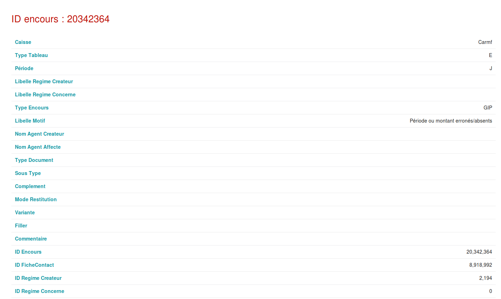

Stage 2èmes année : CARMF

La Caisse Autonome de Retraite des Médecins de France ou CARMF est un organisme qui gère les retraites des médecins de France. En effet tout médecins possèdent un compte reraite à la CARMF qui le suivra tout au long de sa carrière et qui lui permettra de bénéficier d'une retraite en fin de carrière. Mon stage ce déroule au sein de la division micro ou développement de cet organisme afin d'améliorer l'infrastructure back de leurs interfaces. Durant ce stage, mon outil de développement aura été CakePHP, MariaDB et adminer.
CakePHP
Présentation :

CakePHP 3 est un framework pour le développement web qui fonctionne avec PHP 7.2 .Ce framework suis les codes du MVC (Modèle, Vue, Controller) comme CodeIgniter ou d'autres frameworks. Il contient des foncionnalités très intéréssantes: -Rapide et flexible avec un moteur de templates utilisant la syntaxe PHP et apportant des classes utilitaires (des "helpers") facilitant le formatage (utilisation de AJAX, JavaScript, HTML, des formulaires et bien d'autres). -Fonctionne dans n'importe quel sous-répertoire pour peu qu'il y soit accessible via un serveur HTTP tel que Apache. -Composants de sécurité, de gestion des droits et de gestion des sessions.
Ne connaissant pas ce framework, dans un premier temps j'ai bénéficier d'une formation pendant 15 jours qui m'a permis de me familiariser avec mon nouvel environnement. J'ai donc suivi le tutoriel cakePHP 3 et je me suis inicier en créant les interfaces du tutoriel tout en comprenant comment ce MVC communiquait pour afficher les informations à l'écran et récupérer les données sql. Puis ayant fini le tutoriel, mon tuteur de stage m'avait demandé de perfectionner ces interfaces pour les lier entre elles et mettre en place une sécurité.
Projet du stage : Mise en place
Le projet que mon tuteur m'a donné consiste a créer une interface qui permet à des utilisateur d'insérer, d'actualiser et de récuperer des fichiers "encours" dans une base de donnée. Dans un premier temps, je devais réfléchir à l'éllaborations d'une base de donnée en tenant compte de ce que demandais le cahier des charges.Pour réaliser le MCD de la base de donnée j'ai utilisé MySQL Workbench qui permet la création de MCD et la visualisation d'une potentielle base de donnée. De plus, pour l'interface j'ai fait quelques esquisses au brouillon puis j'ai utilisé un wireframe pour faire ma maquette. Tout ce travail a été mis dans un compte-rendu technique afin de présenter à mon tuteur afin qu'il me donne le feu vert pour commencer à programmer.
Compte-rendu technique :
Compte-rendu préparatoire du projetProjet du stage : Réalisation
Après avoir discuté de la manière dont je voyais la résolution du problème avec mon tuteur, il m'a donné des directives à suivre pour la réalisation de ce projet. En effet cette application devait avoir des fonctionnalités obligatoires : -Une méthode qui permettait la modification de l'état d'un fichier préalablment inserer dans une base de donnée. -Une méthode qui permettait à un utilisateur de pouvoir avoir accès à son fichier et modifier certains paramètres en cas de problème.
Projet du stage : Première approche
Ce prototype du projet a été réalisé en amont du projet final. Il a permis à mon tuteur de visualiser comment je voyais l'application web qu'il m'a demandé. On a discuté par rapport à ce prototype et il m'a indiqué ce qu'il voulait pour la version final.
Cette page est la barre d'action de la page principale. C'est à cet endroit que l'on pourra recupérer un encours inscrit dans la base de donnée.
Cette page permet de récuperer le détail d'un encours grâce au nom de la caisse et à la clé primaire de la table.
 Cette page est le résultat de l'authentification précédente, on y retrouve tout le détails d'un enregistrement de la table.
On peut considérer cette page comme une méthode edit(). Elle permet de récupérer la clé étrangère ID_etat, de la modifier ce qui permettera de mettre à jour son libelle qui se trouve dans une autre table.
Projet du stage : Version final
Cette version du projet est la conclusion de mon stage. Beaucoup plus simple que la version précedente, elle permet à un utilisateur de l'utiliser sans dificulté. C'est un point que j'ai appris durant mon stage: il faut toujours penser comme un utilisateur qui ne connais pas forcément l'informatique et lui mettre à disposition une interface simple.

Cette inerface est l'accueil du site, elle affiche tous les encours présent dans la base donnée. Sur le côté, on retrouve la possibilité d'ajouter un encours dans la base de donnée et maintenant il y a la possibilité de filtrer les encours présent dans la page afin d'afficher celui que l'on veux. Pour cela il suffit de connaitre l'ID du fichier. Après avoir trouvé son encours, une action modification permet d'ouvrir une nouvelle page.
Cette page est l'endroit où toute modification de l'encours sera faite. L'utilisateur pourra editer son encours s'il lui manque un champ, actualiser son encours si le code motif de son encours est égal à 6, ça le redirigera sur une page. Si le code est égal à 7 ou 8 une autre page sera chargé. Si aucun de ces codes est présent, il y aura une redirection sur l'accueil avec un message indiquant qu'aucune modification n'est nécéssaire. Ensuite l'utilisateur pourra supprimer son encours s'il n'est plus nécéssaire.